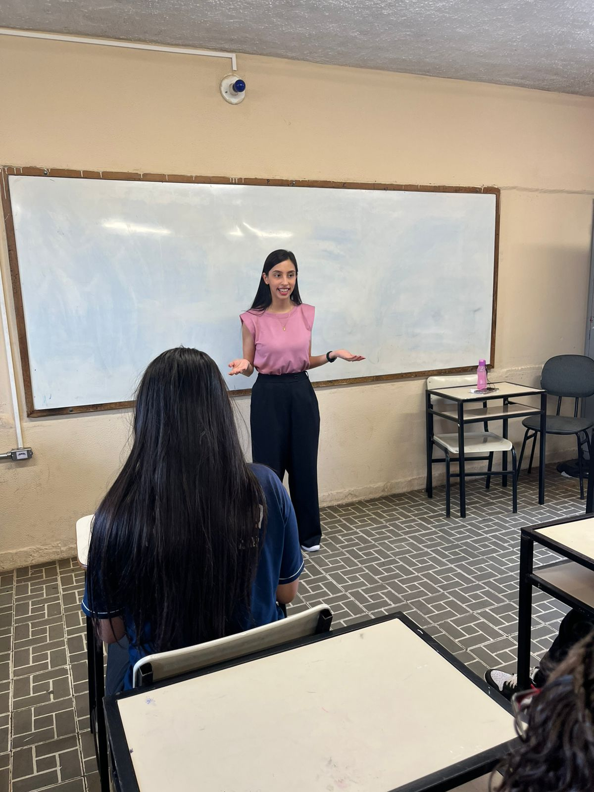
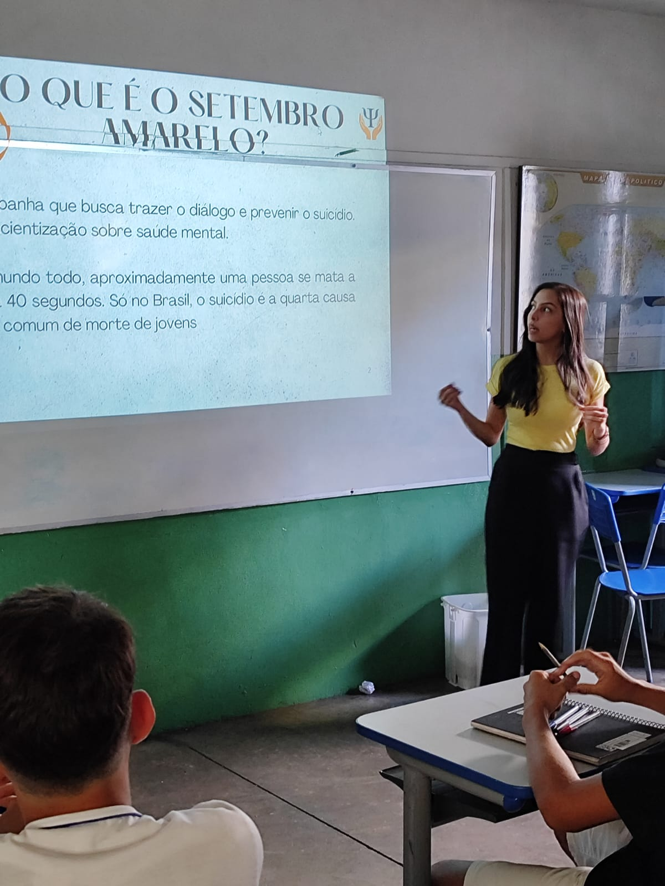
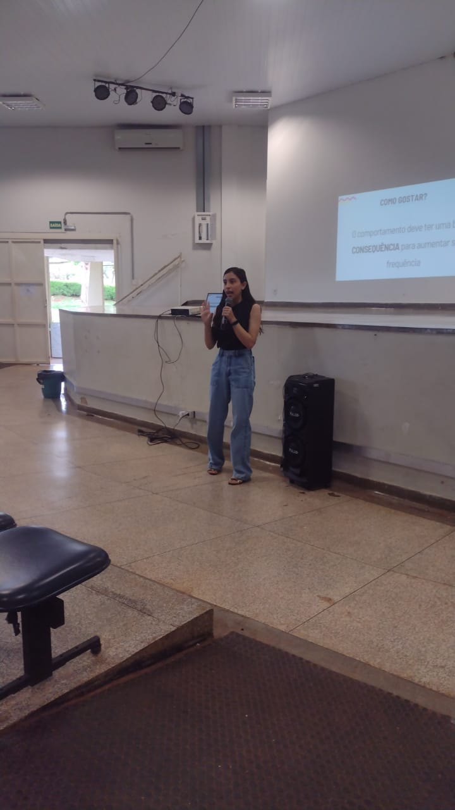
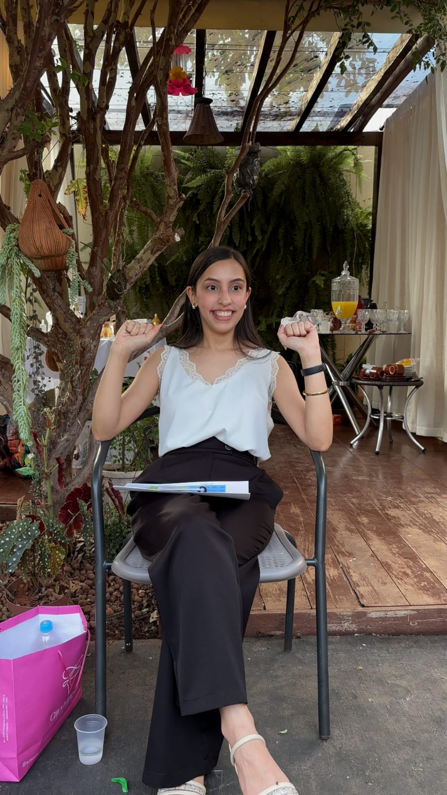

Psicoterapia para quem quer se entender melhor e viver com mais leveza!
Atendimento acolhedor para te ajudar a organizar pensamentos, emoções e tudo que anda bagunçado por dentro.
Vagas em breve para atendimentos online.

Como funciona a psicoterapia:
Atendimentos
Os atendimentos são realizados de forma online, com duração média de 50 minutos, por meio de plataformas seguras.
Sessões
Cada sessão é um espaço reservado para você falar sobre o que está vivendo, no seu tempo e do seu jeito.
Abordagem
Minha atuação é baseada na abordagem Terapia Cognitivo-Comportamental (TCC).
Quem sou eu?
Olá, que bom ter você por aqui! Sou Andressa Corteze, estudante de Psicologia em fase final de formação. Ao longo da minha trajetória, venho me dedicando ao estudo e à prática clínica com foco no acolhimento, na escuta ativa e na compreensão individual de cada pessoa.
Acredito que a psicoterapia é um espaço seguro onde você pode se expressar sem julgamentos, entender seus sentimentos e construir caminhos mais saudáveis para sua vida. Meu objetivo é te ajudar a se conhecer melhor e desenvolver recursos para lidar com suas dificuldades de forma mais leve e consciente.
Tenho formação na abordagem Terapia Cognitivo-Comportamental e na Prática Baseada em Evidências.
Como a terapia pode te ajudar?
• Ansiedade e sobrecarga emocional
Se você vive com a mente acelerada, preocupações constantes ou a sensação de estar sempre no limite, a terapia pode te ajudar a entender esses padrões e encontrar formas mais saudáveis de lidar com o que sente, sem precisar viver em estado de alerta o tempo todo.
• Dificuldade com emoções
Nem sempre é fácil identificar ou expressar emoções. Às vezes elas vêm intensas demais, outras vezes parecem confusas ou até distantes. A terapia é um espaço para dar nome a isso, compreender melhor o que está acontecendo e aprender a lidar com suas emoções com mais clareza.
• Momentos difíceis e mudanças
Mudanças, perdas, conflitos ou fases de transição podem gerar insegurança e desconforto. Nesses momentos, ter um espaço de escuta pode ajudar a organizar pensamentos, tomar decisões com mais consciência e atravessar essas fases de forma menos solitária.
• Autoconhecimento e sensação de estar travado(a)
Às vezes a sensação é de estar repetindo os mesmos padrões ou não conseguir avançar na própria vida. A terapia te ajuda a se observar com mais profundidade, entender suas escolhas e construir novos caminhos que façam mais sentido pra você.
Palestras
Ao longo da minha formação em Psicologia, venho participando e conduzindo momentos de troca sobre temas relacionados à saúde mental, especialmente com adolescentes e jovens.
As palestras são pensadas para ir além da teoria, trazendo reflexões práticas, exemplos do dia a dia e um espaço aberto para perguntas e diálogo.
Se você busca uma palestra que realmente converse com o público, de forma clara, acolhedora e sem excesso de termos técnicos, será um prazer participar.
Realizo palestras para:
• Escolas
• Faculdades
• Instituições
• Grupos e eventos




Certificados
Os certificados apresentados aqui representam etapas importantes da minha trajetória acadêmica e do meu compromisso com uma formação ética, responsável e em constante desenvolvimento na Psicologia.
Em breve, estarei abrindo as vagas para atendimentos psicoterapêuticos. Se você tem interesse em iniciar terapia comigo, pode entrar na lista de interesse para ser avisado(a) em primeira mão quando novas vagas estiverem disponíveis. Não há compromisso, é apenas uma forma de facilitar o primeiro contato.
Procurar ajuda já é um passo importante.
Se você sente que esse é o momento de começar, estou aqui para te acompanhar nesse processo!